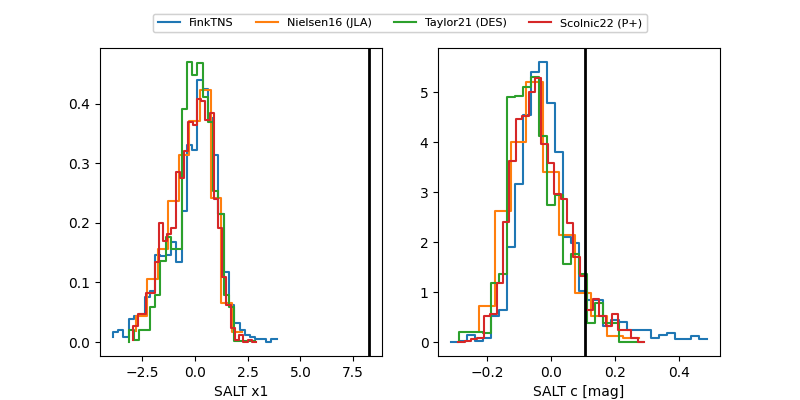

FINK: ZTF25abqztxc
Lasair: ZTF25abqztxc
ALeRCE: ZTF25abqztxc
TNS: 2025tva
YSE: 2025tva
ZTF25abqztxc (ztf,fink)
2025tva (tns,yse)
PS25gjo (panstarrs)
equatorial (ra, dec) = (29.2217,-0.49483)
galactic (l, b) = (156.1727,-59.07597)

last ps1::w=20.83, ztfr=20.68
11 ps1::w, 1 ztfr detections